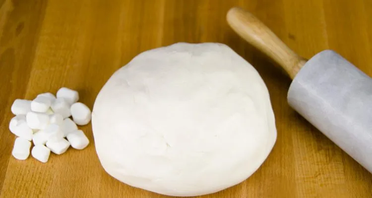
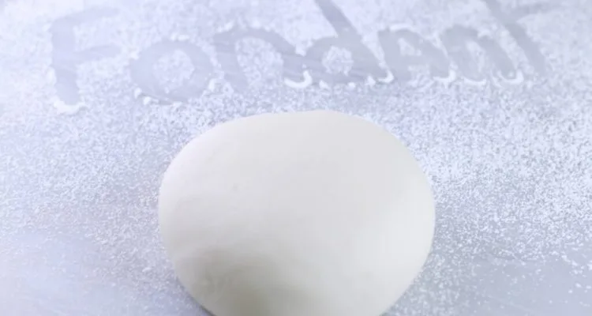

Перейти к основному содержанию
Тортопедия
Первая онлайн-энциклопедия украшения тортов с фото и видео
Главная страница
Украшение мастикой
Уроки лепки
Всё о мастике
Торты на праздники
Что почитать
Трафареты
Идеи и вдохновение
О Тортопедии
ru
uk
Home
>
Всё о мастике
Всё о мастике
Как покрасить мастику: красители и способы окрашивания
Как сделать мраморную мастику
Как обтянуть торт мастикой из маршмеллоу – простой и понятный способ
Выбираем мастику для обтяжки торта – какая лучше
4 проверенных рецепта шоколадной мастики
Рецепт марципана для торта с подробными фотографиями
Рецепт мастики из сгущенки

Мастика из маршмеллоу – рецепт пошагово
Рецепт мастики из желатина – быстро и недорого

Как сделать сахарную мастику в домашних условиях: 8 отличных рецептов
Как обтянуть торт мастикой без складок